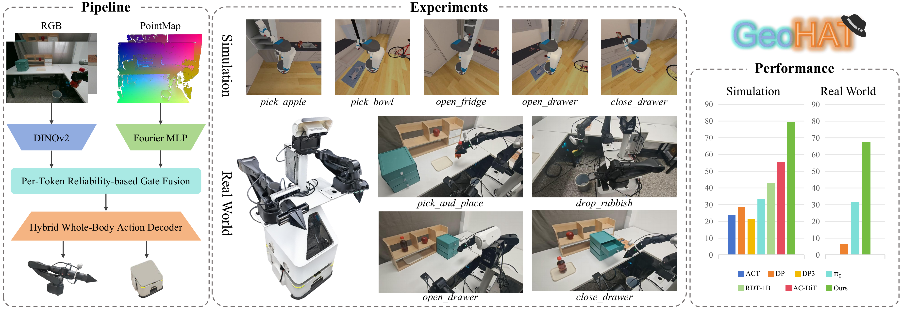
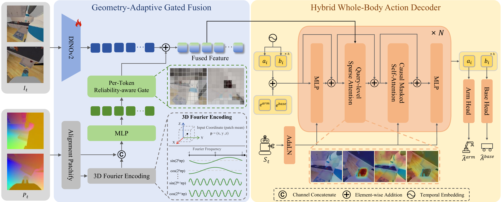

Overview of GeoHAT. Left: GeoHAT fuses multi-view RGB features with PointMap features through reliability-aware gated fusion, and then predicts coordinated arm-base actions with a hybrid whole-body decoder. This design injects geometry only where reliable and routes visual context to the action subspaces that need it. Middle: Simulation and real-world mobile manipulation tasks used for evaluation. Right: Success rates showing strong performance in both simulation and real-world deployment.

Architecture of GeoHAT. Patch-aligned PointMap coordinates are encoded via a Fourier MLP and selectively fused into DINOv2 features through per-token gating modulated by depth confidence (left). The hybrid action decoder interleaves arm and base tokens, applies query-level Top-K cross-attention for subspace-specific visual grounding, and uses causal self-attention for temporal coordination (right).
@misc{zhu2026geohatgeometryadaptivehybridaction,
title={GeoHAT: Geometry-Adaptive Hybrid Action Transformer for Mobile Manipulation},
author={Xiangyu Zhu and Renjun Wu and Luzhou Ge and Jinyan Liu and Xuesong Li},
year={2026},
eprint={2606.13394},
archivePrefix={arXiv},
primaryClass={cs.RO},
url={https://arxiv.org/abs/2606.13394},
}